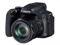

器材库 > 不可换镜头数码相机 > PowerShot SX70 HS

规格总览
发布日期
2018-10-22
影像规格
影像传感器
CMOS
影像传感器尺寸
1/2.3英寸
总像素
2110万
有效像素
2030万
影像处理器
DIGIC 8
静态图像格式
JPEG, RAW
静态图像尺寸
大： 5184×3888中： 3648×2736小： 2432×1824RAW： 5184×3888
短片格式
MP4
短片尺寸
3840×21601920×10801280×720
音频格式
MPEG-4 AAC LC（立体声）
防抖系统
IS光学影像稳定器
镜头和对焦
焦距
3.8mm-247mm
等效35mm画幅焦距
21mm-1365mm
最大光圈
f/3.4-6.5
光学变焦
65倍
最近对焦距离
0cm, 微距0cm
曝光控制
场景模式
自拍人像/人像/平滑皮肤/食物/手持夜景/焰火
快门速度
15-1/2000秒
ISO感光度
自动， ISO 100-ISO 3200 以1/3级增减
白平衡
自动/日光/阴影/阴天/钨丝灯/白色荧光灯/闪光灯/用户自定义
连拍
最快约10.0张/秒（单次自动对焦）最快约5.7张/秒（伺服自动对焦）
拍摄模式
M手动/Av光圈优先/Tv快门优先/P程序/自动/混合式自动/全景模式/运动/SCN特殊场景/创意滤镜/短片/C1用户自定义1/C2用户自定义2
创意滤镜
颗粒黑白/柔焦/鱼眼效果/油画效果/水彩画效果/玩具相机效果/微缩景观效果
闪光灯
内置闪光灯
弹出式
取景规格
取景器
电子取景器
取景器像素
约236万
LCD尺寸
3.0英寸
LCD像素
约92万
LCD特性
翻转屏
文件输入/输出
记录媒介
SD/SDHC, SDXC
数据接口
USB2.0
视频/音频接口
HDMI 输出
无线功能
Wi-Fi, 蓝牙
电源
电池
可充电锂离子电池
外观
颜色
黑色
尺寸
127.1×90.9×116.6mm
重量
仅机身约574g / 含电池和存储卡约610g
其它
附件
电池充电器LC-E12C，电池LP-E12，镜头盖，背带
该产品暂无存档的网友点评
产品图 / 样片
PowerShot SX70 HS